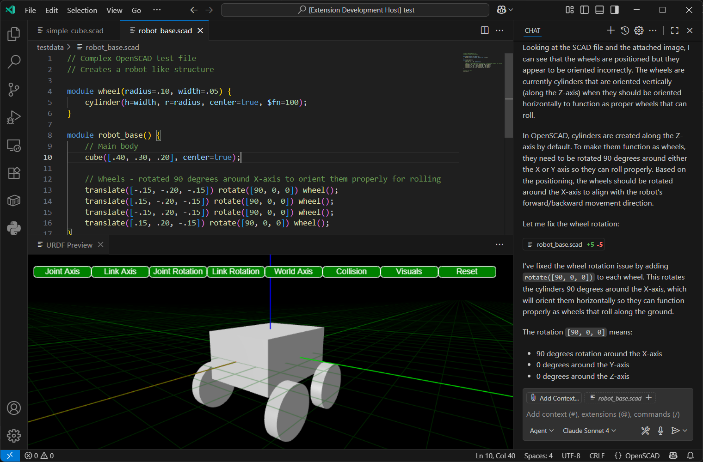

OpenSCAD Preview and Language Support
OpenSCAD is a powerful tool for creating 3D models programmatically. This section covers how the URDF editor integrates OpenSCAD support, including file handling, previewing, and language features.

OpenSCAD File Handling
The URDF editor can open and edit .scad files directly. When a .scad file is opened, the editor provides syntax highlighting and basic editing features.
OpenSCAD Preview
The editor includes a preview feature for OpenSCAD files. When a .scad file is saved, the editor automatically converts it to STL format using the openscad-wasm-prebuilt module. The generated STL file is then displayed in the 3D viewer.
OpenSCAD Language Features
The editor provides several language features for OpenSCAD:
- Syntax Highlighting: Basic syntax highlighting is available for OpenSCAD code.
- Code Snippets: Common OpenSCAD patterns are available as code snippets.
- Error Reporting: The editor reports syntax errors in OpenSCAD code.
- OpenSCAD Library Support: The editor recognizes and provides support for standard OpenSCAD libraries.
OpenSCAD Library Configuration
The extension automatically loads OpenSCAD libraries from OS-specific default locations:
- Windows: %USERPROFILE%\Documents\OpenSCAD\libraries
- Linux: $HOME/.local/share/OpenSCAD/libraries
- macOS: $HOME/Documents/OpenSCAD/libraries
To add custom library paths:
1. Open VS Code settings (Ctrl+,)
2. Search for "urdf-editor.OpenSCADLibraryPaths"
3. Add additional library directories (supports ${workspace} variable)
Example settings.json:
{
"urdf-editor.OpenSCADLibraryPaths": [
"${workspace}/scad_libs",
"C:\\MyLibraries\\OpenSCAD",
"/usr/local/share/openscad/libraries"
]
}
OpenSCAD Documentation Generation
The extension can automatically generate documentation for your OpenSCAD libraries:
- Open the command palette (
Ctrl+Shift+P) - Run "URDF: Generate OpenSCAD Libraries Documentation"
- Choose where to save the markdown file
- The extension will scan all library paths and extract:
- Header comments from library files
- Module and function signatures
- Parameter documentation
- Usage examples
This documentation is also available to AI assistants via the Model Context Protocol (MCP) for intelligent code completion and suggestions.
AI-Assisted Development Features
The URDF Editor provides advanced AI integration to enhance your OpenSCAD development workflow. These features leverage modern AI capabilities to make 3D modeling more intuitive and efficient.
Visual Feedback Loop
- Screenshot Integration: The editor can automatically capture screenshots of your 3D models and provide them to AI assistants for visual analysis
- Real-time Preview: AI can see exactly what your OpenSCAD code produces, enabling contextual suggestions and corrections
- Visual Debugging: When your model doesn't look right, AI can analyze the rendered output and suggest code improvements
Model Context Protocol (MCP) Integration
The editor includes a built-in MCP server that exposes powerful tools for AI assistants:
take_screenshot: Captures high-quality screenshots of active OpenSCAD previews for AI analysistake_screenshot_by_filename: Takes targeted screenshots of specific files, automatically opening previews as neededget_openscad_libraries: Provides comprehensive documentation of available OpenSCAD libraries, modules, and functions
AI-Powered Development Workflow
- Write or describe your 3D model requirements in natural language
- Generate code using AI assistance with full library context
- Preview instantly with optimized fast rendering (preview mode)
- Get visual feedback through automatic screenshot analysis
- Iterate rapidly with AI suggestions based on rendered output
Performance Optimizations for AI Workflow
- Fast Preview Mode: All OpenSCAD files render in optimized preview mode by default (10x faster)
- Automatic Performance Settings: Injected optimization settings (
$fn=8,$fa=12,$fs=2) for quick iteration - Cancellable Operations: Long-running renders can be interrupted instantly
- 1-minute Timeout: Quick feedback prevents workflow interruption
This integrated approach enables a new style of "visual programming" where AI can understand both your code intent and the actual 3D output, creating a powerful feedback loop for rapid prototyping and design iteration.
Acknowledgements
Special thanks to the OpenSCAD community for their work.
Thank you to @lorenzowritescode for the the prebuilt OpenSCAD WASM module.